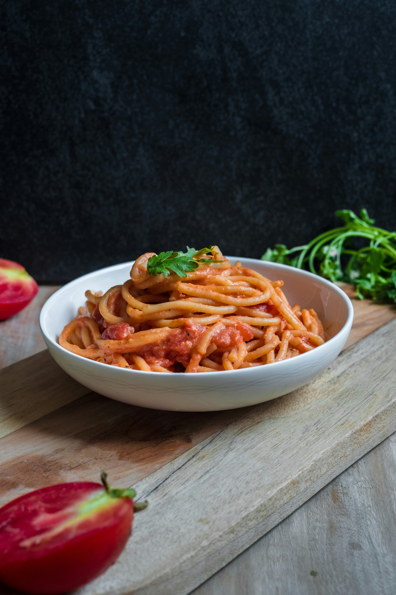

Home
Spaghetti Recipe

A classic homemade spaghetti recipe features al dente pasta, a rich meat tomato sauce, and a creamy cheese blend
Ingredients
- 1 lb spaghetti noodles
- 1 lb ground beef
- 2 cups ricotta cheese
- 1 cup parmesan cheese
- 2 cups marinara sauce
Steps
- Preheat the oven to 375°F (190°C).
- Cook the spaghetti noodles according to the package instructions.
- In a large skillet, brown the ground beef and drain the excess fat.
- Add the marinara sauce and simmer for 15 minutes.
- In a mixing bowl, combine the ricotta cheese and parmesan cheese.
- Assemble the lasagna by layering the noodles, meat sauce, and cheese mixture.
- Bake for 30 minutes or until the top is golden brown.